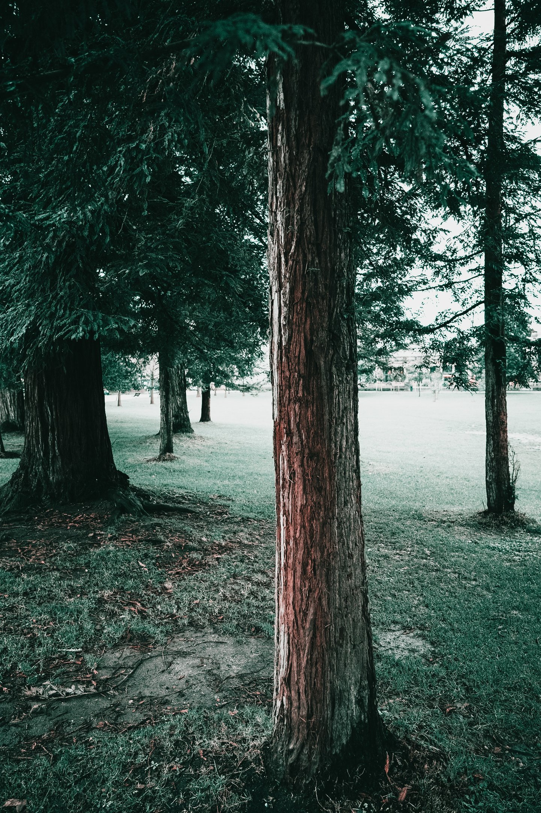
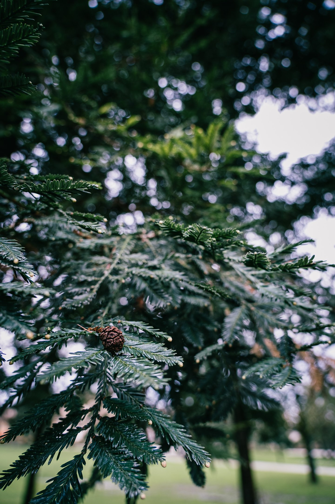
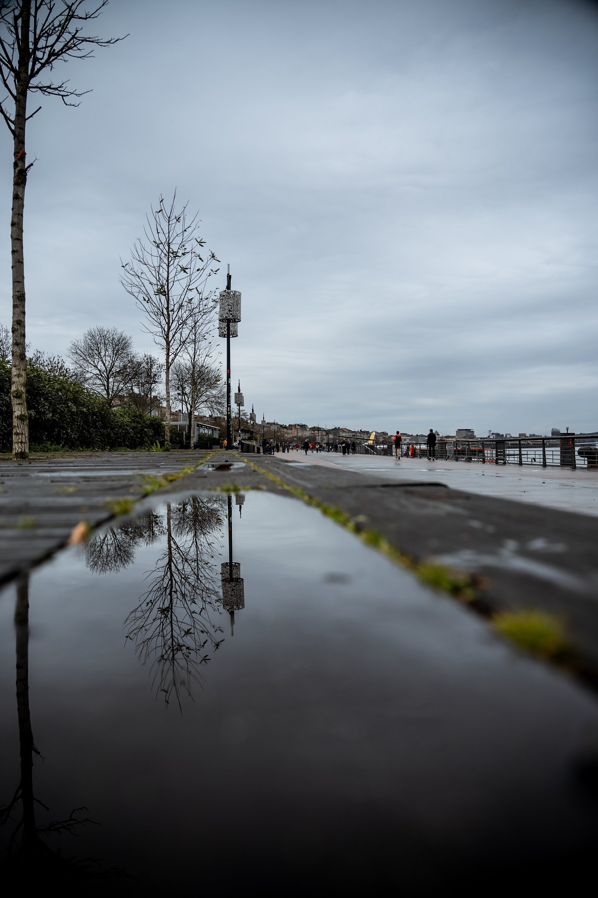
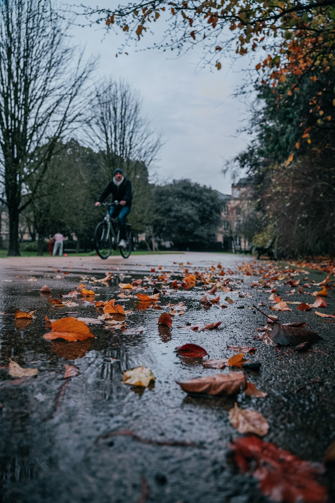

What if 2025 were the year you decided to grow your creativity and capture the precious moments around you?
Receiving a camera at Christmas, or simply wanting to try a new hobby, can feel like a challenge at first. With the right basics, you can turn that resolution into an exciting adventure.
In this article I share 3 essential keys to make photography a real source of pleasure and personal expression this year.
1. Master the technical basics: unlock your camera
Quick tip: try aperture priority (A or Av). It lets you play with depth of field and create a beautiful bokeh.
Technique is the foundation of a good photo. Whether you are starting out or strengthening what you already know, understanding aperture, shutter speed and ISO can transform your pictures.


Same tree, different point of view!
We move from a wide view...
To something close to macro!
Practice: put a cup of coffee on a table beside a sunny window. Adjust your settings to catch the soft shadows or the strip of light crossing the scene.
Here is the idea, illustrated with a tree:
2. Turn your pictures into emotional stories
Photography is not only technical settings. It holds stories, atmospheres, and above all emotions. Take time to look around you and find an element or a moment that moves you.
Example: a simple walk in a park can reveal magic — a ray of sun through the branches, a cat watching a fly, a drop of water hanging from a leaf.
A question to ask: "What do I want this photo to say?"
3. Share your vision and let your creativity grow
Sharing your pictures is an excellent way to improve and to talk with other enthusiasts. That can be Instagram, a blog, or even a small personal exhibition. Challenge: give your photos a theme, such as "Bright winters" or "New beginnings".
That gives the series a thread. A practical idea: print your best photos and set up a mini exhibition at home. Invite people close to you to see the work.


Here I made a series I called "Water flower": I shot from ground level, playing with the puddles.
Conclusion: make this a creative year
Follow these 3 keys and you will learn the basics of photography, and also a new way of seeing the world. Use the start of the year to capture what inspires you, and let your camera become a partner in your creativity.
So if you just received a camera for Christmas and you want to explore what it can do, stay close: practical advice and creative ideas are on the way.